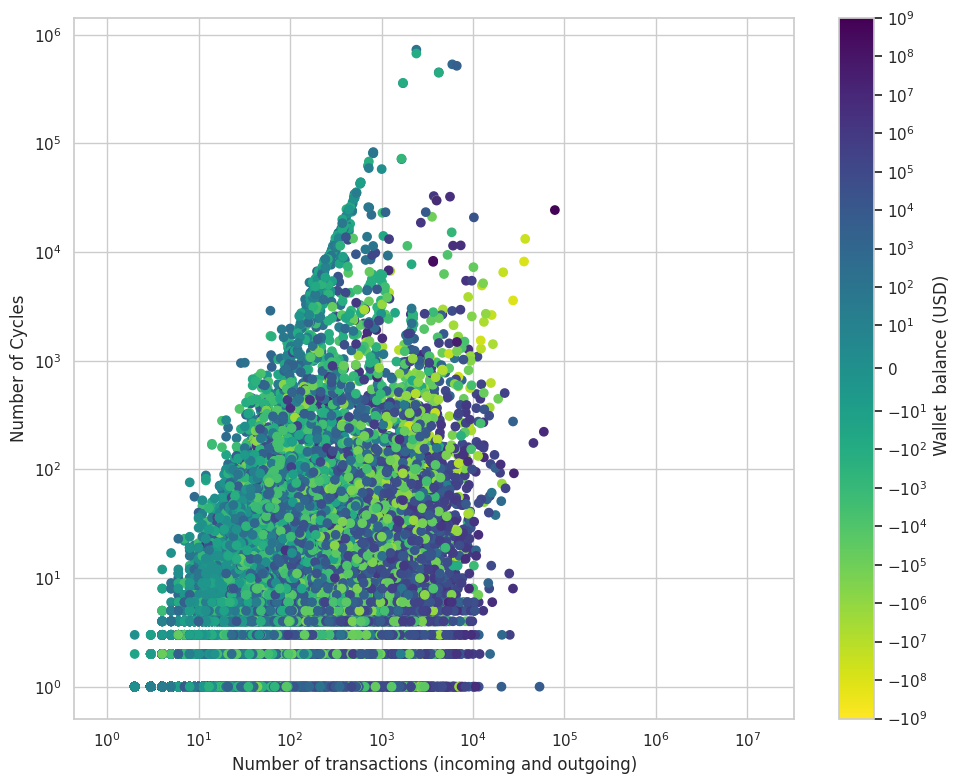

CCDF Cycles Duration

Illicit activities and coordinated manipulations in the Non-Fungible Tokens (NFT) market remain significant concerns, driven by the pseudonymous and publicly transparent nature of blockchain transactions and the lack of market oversight. In this study, we introduce a novel framework for detecting suspicious behavior in NFT trading ecosystems through temporal graph analysis. Our approach represents the market as a large-scale, time-evolving transactional graph, capturing realistic market dynamics and the complex interactions between traders. By leveraging temporal knowledge graphs, we track not only connections between traders but also the evolution of these interactions over time, including their sequence, rhythm, and frequency, enabling the identification of illicit or anomalous behaviors that static graph representations cannot reveal. Using an optimized temporal cycle-detection algorithm, we extract connected groups of wallets for in-depth behavioral analysis, uncovering patterns indicative of unusual or coordinated manipulation. To overcome the absence of labeled ground-truth validation data, we employ a temporal motif–based validation, demonstrating that flagged entities exhibit trading behaviors significantly deviating from standard market dynamics. Our results highlight the potential of temporal graph–based methodologies to enhance surveillance, risk detection, and regulatory oversight in decentralized NFT markets.


Temporal cycle counts for nodes in the NFT graph with δ = 24 hours and L = 15. The plot shows the total number of temporal cycles versus the total number of transactions (incoming and outgoing). Nodes are colored according to wallet balance (total incoming minus total outgoing transaction value). All axes and the color scale are logarithmic.However, this relationship varies by many orders of magnitude and is highly heterogeneous. For example, a node with around 1,000 transactions may participate in fewer than 10 cycles, while another node with the same transaction count may participate in up to 106 cycles.

These plots present the Complementary Cumulative Distribution Functions (CCDFs) of both cycle length and cycle duration, highlighting the distribution, frequency, and relative prevalence of trading temporal cycle detected.

Heatmap showing, for each motif type, the ratio of motifs found in flagged suspicious wallets to those observed in normal wallets. This ratio quantifies how much more (or less) frequently each motif occurs in these flagged wallets compared to the baseline trading population, highlighting the atypical trading behavior they exhibit.
This work was carried out within the STRAST Research Group at the Information Processing and Telecommunications Center (IPTC), Universidad Politécnica de Madrid, as part of the CEDAR project, funded by the Horizon Europe Programme (Grant Agreement No. 101135577).

@Article{}